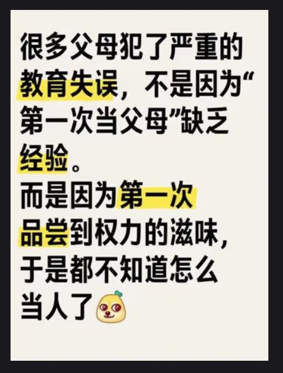

432InfantryRegiment
@432Ifantrygroup
RT @EntropyF73: 我爹在我小时候无数次开玩笑式地提及想把我扔到山沟沟里去接受苦难教育，虽然现实中没有实施，但对孩子成长中安全感的摧毁是彻底的
这种时候就要祭出这张图了

Entropy 📎💙
@EntropyF73
我爹在我小时候无数次开玩笑式地提及想把我扔到山沟沟里去接受苦难教育，虽然现实中没有实施，但对孩子成长中安全感的摧毁是彻底的
这种时候就要祭出这张图了 https://t.co/9Vpwkx0ajj https://t.co/syKx5qxdwO